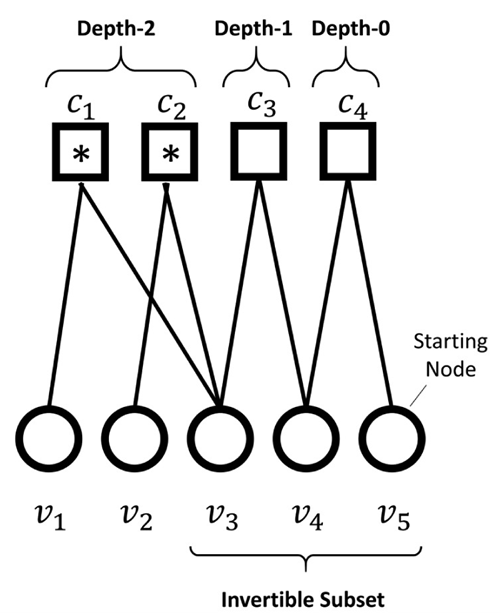

Pharmaceutical text found on drug labels possesses distinct features that differentiate it significantly from the regular text. This specificity stems from the specialized language, terminology, and regulatory requirements that shape the drug label domain. As a consequence, a generic large language model (LLM), often known as a vanilla model might not exhibit optimal effectiveness when applied to the drug label text. This is primarily because such generic models lack the domain-specific knowledge required to accurately interpret and process the nuances and specialized idiosyncrasies inherent in pharmaceutical texts.

This is where PharmBERT comes into play. Developed for the US Food and Drug Administration (FDA), PharmBERT is not just another addition to the family of BERT models; it is a purpose-built, specialized model that has been meticulously trained to grasp and interpret the unique aspects of pharmaceutical text, particularly drug labels. This model is designed to bridge the gap between general language processing capabilities and the specific demands of the drug label domain. By focusing on the peculiarities of pharmaceutical language, PharmBERT aims to provide more accurate, reliable, and contextually relevant insights from drug label texts than what would be achievable with a general-purpose model. In creating PharmBERT, we have not only leveraged the powerful architecture of BERT models but also enriched it with a training regime that includes a vast and diverse range of pharmaceutical texts. This specialized training ensures that PharmBERT is adept at handling the kind of linguistic challenges that are typical in drug labels, such as complex compound names, medical terminology, and regulatory language. The outcome is a model that is finely tuned to deliver enhanced performance in the analysis of drug label text, thereby offering a valuable tool for pharmaceutical companies, healthcare professionals, and regulatory bodies in their endeavors to understand and utilize the wealth of information contained in drug labels.
Microbes can adapt over time, developing resistance to antibiotics—a phenomenon known as antimicrobial resistance (AMR). Once this resistance emerges, treating infections becomes much more difficult, often requiring stronger or alternative antibiotics, many of which may carry greater risks. Misuse and overuse of antibiotics have accelerated this process, putting constant evolutionary pressure on microbes and driving the rise of AMR. Today, this issue is widely regarded as one of the most serious public-health threats, with the potential to trigger crises comparable to pandemics if effective treatments are unavailable.
The aim of this project was to design and test machine learning approaches that leverage bacterial genome sequences in two ways: first, to estimate the minimum antibiotic dosage needed to combat an infection; and second, to pinpoint mutations or genes that contribute to resistance. I introduced a new feature extraction method, counting Amino-Acid k-mers, enables machine learning models to recognize recurring patterns in amino acid sequences within bacterial genes. I compared the proposed method to the existing methods, such as counting nucleotide (NT) k-mers, gene searching, and Single-nucleotide polymorphism (SNP) calling. The proposed approach not only matches or surpasses the accuracy of current techniques for predicting dosage but also offers researchers deeper insight into how resistance arises at the molecular level.

In practical classification scenarios, it's common to encounter an imbalanced or long tailed distribution of classes. This situation arises when certain classes within the dataset, known as minority classes, are represented by a relatively small number of samples, while others, referred to as majority classes, are characterized by a significantly larger number of samples. This non-uniform distribution of samples among classes presents a challenge to a wide array of machine learning algorithms. This issue is further exacerbated if the selected performance metric values all classes equally, irrespective of their frequency in the dataset, for reasons such as fairness and inclusivity or because of an intrinsic interest in the minority class.
To cope with these challenges, a simple modification of standard fine-tuning is employed: Two-stage fine-tuning. In Stage 1, the final layer of the pretrained model is pre-finetuned. The pre-finetuning can be done either by training the last layer with class-balanced augmented data, generated using ChatGPT, or with a class-balanced reweighting method used with the original data. In Stage 2, the standard fine-tuning is performed. This modification has several benefits: (1) it leverages pretrained representations by only finetuning a small portion of the model parameters while keeping the rest untouched; (2) it allows the model to learn an initial representation of the specific task; and importantly (3) it protects the learning of tail classes from being at a disadvantage during the model updating. The experimental results show that the proposed two-stage fine-tuning outperforms vanilla fine-tuning and state-of-the-art methods on different datasets.

Peak-to-Average Power Ratio (PAPR) is a major shortcoming of Orthogonal Frequency Division Multiplexing (OFDM) systems. One promising solution to this issue is the use of Invertible-Subset Low-Density Parity-Check (IS-LDPC) codes. Although IS-LDPC codes are particularly effective at controlling PAPR with low search complexity, their error-control performance degrades as the number of invertible subsets increases.
To investigate the reasons for this performance degradation, I conducted a mathematical analysis of the code construction and proved four theorems that determine the probability of key events in construction of such codes, while also establishing bounds on the decisions that influence their performance. Based on these theorems, I proposed a heuristic search method designed to enhance the error-control performance of IS-LDPC codes, while maintaining their favorable PAPR control characteristics and low search complexity. Computer simulations show that the proposed method decreases the probability of bit error rate (BER) and frame error rate (FER) across different configurations of IS-LDPC codes.
